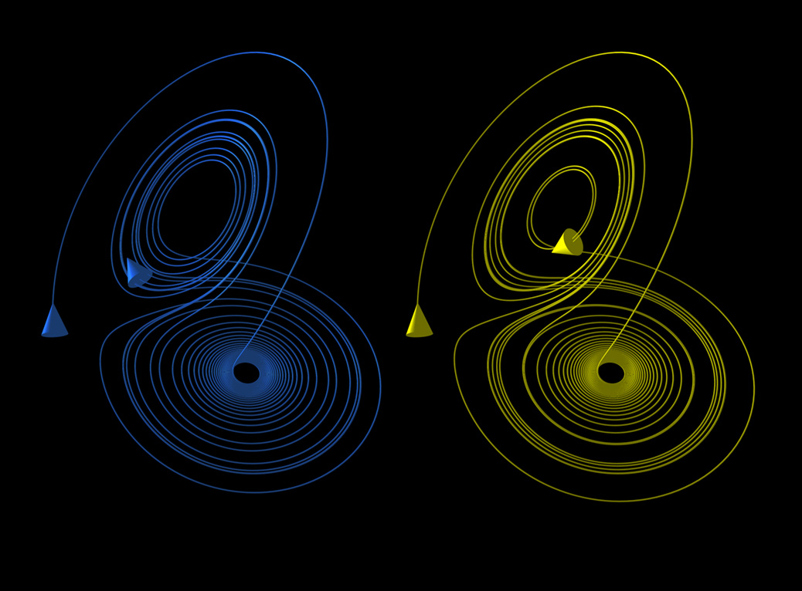

History
Chaos theory and the sensitive dependence on initial conditions were described in the literature in a particular case of the three-body problem by Henri Poincaré in 1890. He later proposed that such phenomena could be common, for example, in meteorology.
In 1898, Jacques Hadamard noted general divergence of trajectories in spaces of negative curvature. Pierre Duhem discussed the possible general significance of this in 1908.
The idea that the death of one butterfly could eventually have a far-reaching ripple effect on subsequent historical events made its earliest known appearance in "A Sound of Thunder", a 1952 short story by Ray Bradbury about time travel.
In 1961, Lorenz was running a numerical computer model to redo a weather prediction from the middle of the previous run as a shortcut. He entered the initial condition 0.506 from the printout instead of entering the full precision 0.506127 value. The result was a completely different weather scenario.
Lorenz wrote:
At one point I decided to repeat some of the computations in order to examine what was happening in greater detail. I stopped the computer, typed in a line of numbers that it had printed out a while earlier, and set it running again. I went down the hall for a cup of coffee and returned after about an hour, during which time the computer had simulated about two months of weather. The numbers being printed were nothing like the old ones. I immediately suspected a weak vacuum tube or some other computer trouble, which was not uncommon, but before calling for service I decided to see just where the mistake had occurred, knowing that this could speed up the servicing process. Instead of a sudden break, I found that the new values at first repeated the old ones, but soon afterward differed by one and then several units in the last decimal place, and then began to differ in the next to the last place and then in the place before that. In fact, the differences more or less steadily doubled in size every four days or so, until all resemblance with the original output disappeared somewhere in the second month. This was enough to tell me what had happened: the numbers that I had typed in were not the exact original numbers, but were the rounded-off values that had appeared in the original printout. The initial round-off errors were the culprits; they were steadily amplifying until they dominated the solution. (E. N. Lorenz, The Essence of Chaos, U. Washington Press, Seattle (1993), page 134)
Illustration
These figures show two segments of the three-dimensional evolution of two trajectories (one in blue, and the other in yellow) for the same period of time in the Lorenz attractor starting at two initial points that differ by only 10−5 in the x-coordinate. Initially, the two trajectories seem coincident, as indicated by the small difference between the z coordinate of the blue and yellow trajectories, but for t > 23 the difference is as large as the value of the trajectory. The final position of the cones indicates that the two trajectories are no longer coincident at t = 30.
Theory and mathematical definition
Recurrence, the approximate return of a system towards its initial conditions, together with sensitive dependence on initial conditions, are the two main ingredients for chaotic motion. They have the practical consequence of making complex systems, such as the weather, difficult to predict past a certain time range (approximately a week in the case of weather) since it is impossible to measure the starting atmospheric conditions completely accurately.
A dynamical system displays sensitive dependence on initial conditions if points arbitrarily close together separate over time at an exponential rate. The definition is not topological, but essentially metrical.
In physical systems
In weather
The butterfly effect is most familiar in terms of weather; it can easily be demonstrated in standard weather prediction models, for example. The climate scientists James Annan and William Connolley explain that chaos is important in the development of weather prediction methods; models are sensitive to initial conditions. They add the caveat: "Of course the existence of an unknown butterfly flapping its wings has no direct bearing on weather forecasts, since it will take far too long for such a small perturbation to grow to a significant size, and we have many more immediate uncertainties to worry about. So the direct impact of this phenomenon on weather prediction is often somewhat wrong."
In quantum mechanics
The potential for sensitive dependence on initial conditions (the butterfly effect) has been studied in a number of cases in semiclassical and quantum physics including atoms in strong fields and the anisotropic Kepler problem. Some authors have argued that extreme (exponential) dependence on initial conditions is not expected in pure quantum treatments; however, the sensitive dependence on initial conditions demonstrated in classical motion is included in the semiclassical treatments developed by Martin Gutzwiller and Delos and co-workers.
Other authors suggest that the butterfly effect can be observed in quantum systems. Karkuszewski et al. consider the time evolution of quantum systems which have slightly different Hamiltonians. They investigate the level of sensitivity of quantum systems to small changes in their given Hamiltonians. Poulin et al. presented a quantum algorithm to measure fidelity decay, which "measures the rate at which identical initial states diverge when subjected to slightly different dynamics". They consider fidelity decay to be "the closest quantum analog to the (purely classical) butterfly effect". Whereas the classical butterfly effect considers the effect of a small change in the position and/or velocity of an object in a given Hamiltonian system, the quantum butterfly effect considers the effect of a small change in the Hamiltonian system with a given initial position and velocity. This quantum butterfly effect has been demonstrated experimentally. Quantum and semiclassical treatments of system sensitivity to initial conditions are known as quantum chaos.
In popular culture
The journalist Peter Dizikes, writing in The Boston Globe in 2008, notes that popular culture likes the idea of the butterfly effect, but gets it wrong. Whereas Lorenz suggested correctly with his butterfly metaphor that predictability "is inherently limited", popular culture supposes that each event can be explained by finding the small reasons that caused it. Dizikes explains: "It speaks to our larger expectation that the world should be comprehensible – that everything happens for a reason, and that we can pinpoint all those reasons, however small they may be. But nature itself defies this expectation."